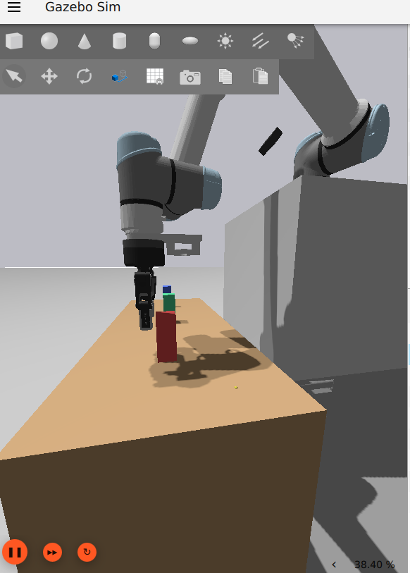
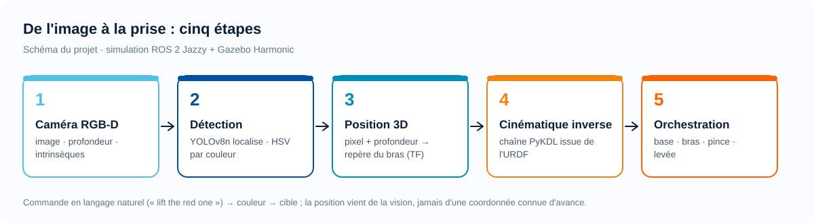
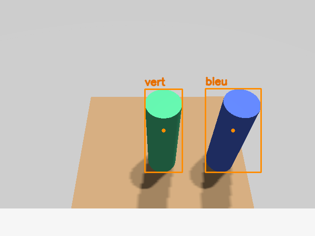

YOLOv8 sur un robot mobile :YOLOv8 on a mobile robot: ce qui a été utilisé, et comment.what was used, and how.
Dans un projet de robotique en simulation (robot MiR250, bras UR5e, caméra RGB-D), YOLOv8 localise les objets à saisir. Le projet relevait d'un module de robotique : l'encadrant a demandé à mon groupe de ne pas approfondir la partie IA, YOLOv8 est donc utilisé préentraîné, sans entraînement.In a simulated robotics project (MiR250 robot, UR5e arm, RGB-D camera), YOLOv8 locates the objects to grasp. The project belonged to a robotics module: our supervisor asked my group not to go deep into the AI side, so YOLOv8 is used pretrained, without training.

Scène Gazebo : le bras devant la table et ses trois cylindres (capture du projet).Gazebo scene: the arm in front of the table and its three cylinders (project screenshot).
Où intervient YOLOv8 :Where YOLOv8 steps in: la localisation de l'objet.locating the object.
La caméra donne une image et une profondeur ; YOLOv8n donne la boîte et le centre de chaque objet ; une segmentation HSV donne sa couleur ; la profondeur donne sa position 3D, que le bras utilise pour le saisir.The camera gives an image and depth; YOLOv8n gives each object's box and centre; an HSV segmentation gives its colour; depth gives its 3D position, which the arm uses to grasp it.


Rôle de chaque étapeRole of each step
| ÉtapeStep | OutilTool | SortieOutput |
|---|---|---|
| LocalisationLocating | YOLOv8n | boîte englobante et centre de l'objetbounding box and centre of the object |
| CouleurColour | segmentation HSVHSV segmentation | rouge, vert ou bleured, green or blue |
| ProfondeurDepth | caméra RGB-DRGB-D camera | distance, puis position 3Ddistance, then 3D position |
| CibleTarget | commande en langage naturelnatural-language command | couleur choisie parmi les trois objetscolour picked among the three objects |
Ce qui a été pris de YOLOv8,What was taken from YOLOv8, et ce qui ne l'a pas été.and what was not.
| FonctionFunction | UtiliséeUsed | CommentHow |
|---|---|---|
| Modèle préentraîné COCOPretrained COCO model | ouiyes | Fichier yolov8n.pt chargé tel quel : 3,16 millions de paramètres, 80 classes.yolov8n.pt file loaded as-is: 3.16 million parameters, 80 classes. |
| Inférence sur une imageInference on one image | ouiyes | Une image 640 × 480 de la caméra virtuelle à la fois, sur processeur, avec Ultralytics et PyTorch.One 640 × 480 image from the virtual camera at a time, on CPU, with Ultralytics and PyTorch. |
| Boîtes englobantesBounding boxes | ouiyes | Leurs coordonnées donnent le centre de l'objet ; avec la profondeur et les paramètres de la caméra, on obtient sa position 3D.Their coordinates give the object's centre; with depth and the camera parameters we get its 3D position. |
| Seuil de confianceConfidence threshold | ouiyes | 0,25, valeur par défaut de la bibliothèque.0.25, the library default. |
| Étiquettes de classeClass labels | nonno | Ignorées : détection indépendante de la classe. La couleur vient de la segmentation HSV.Ignored: class-agnostic detection. Colour comes from the HSV segmentation. |
| Entraînement, ajustement finTraining, fine-tuning | nonno | Hors du cadre du module : aucun jeu annoté, aucune validation.Outside the module's scope: no annotated set, no validation. |
| Segmentation, suivi, métriques (mAP)Segmentation, tracking, metrics (mAP) | nonno | Non utilisés.Not used. |
Réglages ajoutés autour de YOLOSettings added around YOLO
- Filtre sur la zone de travail : les détections hors de la table sont écartées.Workspace filter: detections outside the table are discarded.
- Lissage temporel : le tampon est vidé environ 4 s avant chaque mesure pour stabiliser la position.Temporal smoothing: the buffer is flushed about 4 s before each measurement to stabilise the position.
- Bras en position repos pendant la détection, sinon le modèle détecte la pince.Arm at its home position during detection, otherwise the model detects the gripper.
- Environnement dédié : environnement virtuel Python, numpy figé en 1.26.4 pour rester compatible avec ROS 2.Dedicated environment: Python virtual environment, numpy pinned to 1.26.4 to stay compatible with ROS 2.
Ce que nous voulions explorerWhat we wanted to explore avec YOLO (non réalisé).with YOLO (not carried out).
- Ajuster YOLO (fine-tuning) sur des images annotées de la scène simulée, pour que l'étiquette soit juste et pas seulement la boîte.Fine-tune YOLO on annotated images of the simulated scene, so that the label is right and not only the box.
- Comparer YOLOv8n à des modèles plus grands, avec le compromis précision / temps de calcul sur le processeur du poste.Compare YOLOv8n with larger models, looking at the accuracy / compute-time trade-off on the workstation CPU.
- Utiliser la segmentation d'instance (YOLOv8-seg) pour obtenir le contour de l'objet plutôt qu'une boîte, afin de réduire la gigue et le biais de position observés.Use instance segmentation (YOLOv8-seg) to get the object outline rather than a box, to reduce the jitter and position bias observed.
- Régler le seuil de confiance et le seuil de chevauchement selon le contexte, par exemple plus strict pour saisir, plus souple pour surveiller.Tune the confidence and overlap thresholds to the context, for instance stricter for grasping, looser for monitoring.